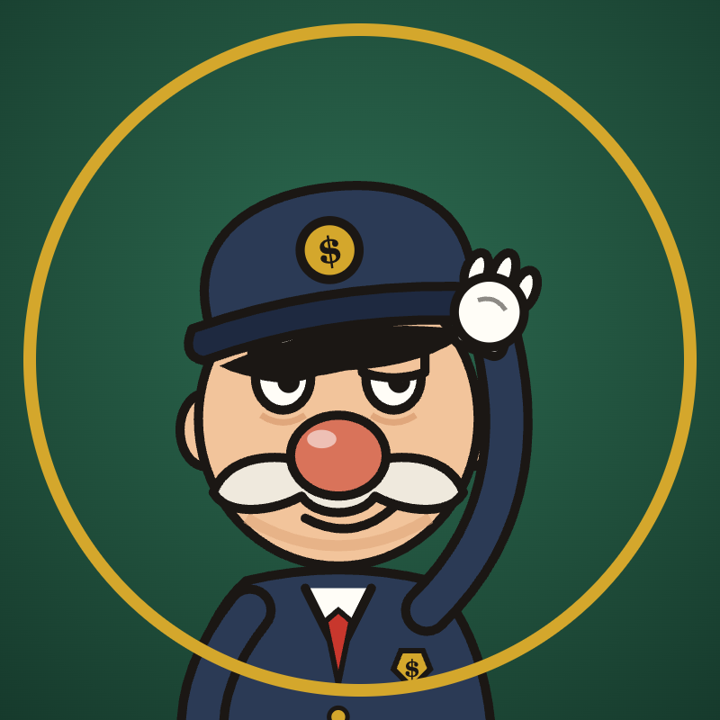

Museum of Bad MoneyPrivacy Policy
Last updated: 26 October 2026
What we collect
When the account owner authorizes the App through TikTok Login Kit, we receive:
- Basic profile information (open ID, display name, avatar) — scope
user.info.basic - An access token and refresh token that allow uploading videos to that account — scopes
video.uploadandvideo.publish
How we use it
Only to upload and publish videos created by the Museum of Bad Money team to the authorizing account, and to confirm the upload succeeded. We do not read, collect or analyse other users' data, followers, comments or messages.
Storage
Tokens are stored only on the channel owner's own computer, in a local configuration file that is not shared. We do not run a server database and do not store any TikTok data online.
Sharing
We do not sell, rent or share any data with third parties. Data is sent only to TikTok's official API endpoints.
Retention and deletion
Tokens are kept until access is revoked. Revoking the App in TikTok (Settings and privacy → Security → Apps and services permissions) invalidates them, and we delete the local copy.
Children
The App is not directed at children and is used only by the adult channel owner.
Contact
Questions: contact us through the Museum of Bad Money YouTube channel's About page.